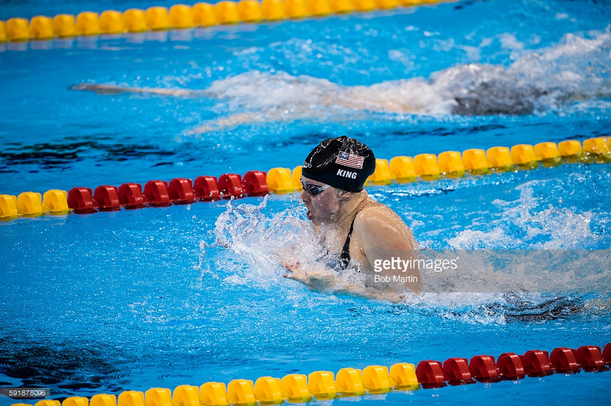

Anyone can swimming. Whether you are doing it for a competative sport or just to hang out around a pool with friends and have fun and even if you just want to go a couple laps.

Competative swimming is a great way to exercise. In cometative swimming there are 4 different strokes. All strokes are not for everyone and most people who do participate in this sport only have one stroke that they are the best in. My best/favorite stroke is the breast stroke. this stroke may be the the slowest out of all of them but can be the most difficult to perfect. The other three stroke are freestyle, back stroke, and butterfly which is the most difficult stroke for me to do.
 Womens 100 breaststroke video